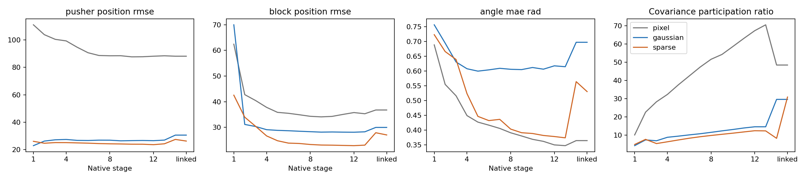

Physical accessibility changes across the encoder.
Block 1 versus block 12; positions in pixels. Probe errors measure accessibility under a fixed fitting procedure, not information-theoretic content.
Evidence: Full-depth encoder results
Part 02 / layers & mechanisms
Layer probes, independently trained depths and targeted controls test what the representations support—and what they do not.
02 / A
12 block outputs + normalization + projector + link. Frozen probes measure what becomes accessible through processing.
Six new Gaussian/Sparse models trained from scratch for 115,308 updates each. Depth-12 models are historical matched references. This is not truncation.
Block 1 versus block 12; positions in pixels. Probe errors measure accessibility under a fixed fitting procedure, not information-theoretic content.
Evidence: Full-depth encoder results
02 / B
Final custom physical-goal success out of 50. Single seed; depth 12 is an earlier reference. Sparse has better physical probes at every tested depth, yet lower final completion.
Evidence: Independent-depth results
At depth 4, Sparse has higher fixed-bank ranking correlation than Gaussian (.218 versus .039), yet final success is 0/50 versus 7/50. Candidate ordering and closed-loop performance are not interchangeable.
02 / C
Linked bilinear frozen-feature predictors; native candidate Spearman. 135 fits cover three architectures, five taps, three objectives and three input controls.
Evidence: Mechanism follow-up: action controls
Affine→bilinear improves native ranking for both JEPAs. At linked output the gain is larger for Gaussian, so it is not a uniquely Sparse interaction benefit.
Removing physical probe directions with rank- and magnitude-matched random controls gives no resolved JEPA-specific excess effect. Pixel shows an effect at block 12 in this test.
Sparse has lower feature response in 7/8 strong appearance families, but greater block-readout degradation in 5/8. Nuisance changes remain decodable.
02 / D

Sparse’s ~58.7% exact zeros occur at the final RepReLU link, not throughout the encoder. Zero activations do not establish independent semantic factors or lower covariance participation ratio.